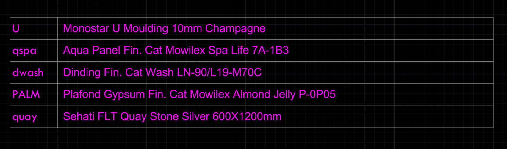

AutoLISP for AutoCAD
LSP Suite
AutoLISP commands for interior drafting. They take care of the repetitive parts: numbering sheets, keeping titles in sync with the table of contents, and drawing spec leaders that stay linked to their labels.
1LSPGetting started
Each .lsp file defines one or two commands. The command name is the first word of the file name, so SL_SPEC_LEADER...lsp gives you SL.
Anything in a yellow box is a command. Type it in the command line and press Enter, the same way you'd type LINE or COPY.
- Unzip it somewhere permanent, like
D:\LSP Suite, not the Downloads folder. AutoCAD remembers where the files are, so if you move or delete them later, the commands stop loading. - Type APPLOAD in AutoCAD.
- To load a file for this session only, select it and click Load.
- To load it every time AutoCAD starts, click Contents... under Startup Suite and add the files there.
Security warning when loading?AutoCAD asks before loading files from a folder it doesn't know. Click Load or Always Load. To stop the question for good, add the folder in OPTIONS → Files → Trusted Locations.
Most TOC and spec commands look for blocks by name: TOC, SPEC, the title block and a few others. Those blocks, plus their layers and linetypes, live in a starter drawing that isn't in this repo. Start new drawings from that file, or insert the blocks from it, before using those commands.
Starter fileIt's in the office Google Drive. If you can't find it, ask Yeza.
The block reference at the bottom lists every block and attribute tag the commands expect.
2LSPQuick tools
Type the command and answer the prompts. No setup beyond the blocks noted on each card.
ADNumber blocks in click order
Drawing Tools/AD incremently increase numbers in any block.lsp
Pick a source block, then click other blocks one at a time. Every number in every attribute goes up by the step times the click count. With step 1, the 1st click gets +1, the 2nd +2, and so on. The target's current value is ignored. Leading zeros are kept, so A-01 becomes A-02.
- Step per click. Enter gives 1. Negative works.
- Pick the source block.
- Click targets in order. Enter to finish.
Attributes tagged SKALA are never touched. Edit the list at the top of the file to protect more tags.
CCCopy a drawing title
Drawing Tools/CC copy drawing title.lsp
Copies the drawing title from one JUDUL block to others. JUDUL is the title label under each drawing in model space.
- Pick the source
JUDULblock. - Click the targets. Enter to finish.
Blocks with a JUDULGAMBAR attribute.
JUDUL blocks.DIVV / DIVHSplit a box into equal compartments
Drawing Tools/DIVV DIVH divide box into equal sized compartments.lsp
For cabinet elevations. DIVV adds vertical dividers, DIVH adds horizontal shelves. Each divider is drawn as two lines one thickness apart, and every clear opening comes out the same size.
- Number of compartments. Default 3.
- Divider thickness. Default 20.
- Pick the cabinet outline.
It uses the outline's bounding box, so it only makes sense on rectangles that aren't rotated.
DSTaper lines for a rounded edge
Drawing Tools/DS Taper Lines for rounded edge.lsp
Draws parallel lines next to a reference line, with gaps that grow by a ratio. That's the usual way to show a curved surface in elevation.
- Pick the reference LINE. Polylines don't work.
- Number of lines. Default 8.
- Growth ratio. Default 1.35. Must be above 1.
- Distance to the last line. The sign picks the side. Default 100.
Your answers become the defaults for the next run.
NUMGRIDGrid of numbers
Drawing Tools/NUMGRID number grid.lsp
Writes a grid of TEXT numbers, left to right, then row by row downward. Uses the current layer, text style and text size.
Prompts: start number, step, columns, rows, X spacing, Y spacing, origin point.
PFPlace the furniture list
Drawing Tools/PF place Furniture TOC.lsp
Builds the furniture list on the index page of a furniture shop drawing set. Inserts a column of FURNLIST blocks, 140 units apart, with codes like CA1, CA2... and titles like cabinet 1, cabinet 2....
Prompts: code prefix, title base, start number, end number, first insertion point.
Block FURNLIST with attributes FURNCODE and FURNTITLE, drawn at 1:20 scale.
3LSPTOC and layouts
These commands treat the table of contents in model space as the master list of sheets. You type each sheet title once in the TOC, and the commands copy it onto the title block of the matching layout.
The TOC block
A TOC is a column of TOC blocks in model space, drawn at 1:20 scale. Each one is a row with two attributes:
| Tag | Holds | Example |
|---|---|---|
PAGECODE | Sheet code, SDF- or SDB- plus two digits. Must match the layout tab name (case doesn't matter). | SDF-03 |
PAGETITLE | Sheet title shown on the title block. | Cabinet 3 elevation |
TOC blocks also hold the spec codes that SL reads. That's covered in setting up spec codes.
Workflow
When to startBuild the TOC when the drawings are about 80 to 90% done. Before that, sheets get added, removed and reordered with every revision, and you'd be redoing the TOC each time.
By this point you should already have one layout per sheet, each copied from the layout template, in the right order.
- Place the rows. In model space run PT with prefix
SDF, start 1, end 12. You getSDF-01toSDF-12with empty titles. - Fill in titles. Double-click the first row and type the title. Then use CT to copy it as-is, or CP / CPP to copy it with the number going up on each click.
- Rename the layouts. Run WQB with prefix
SDF-(with the dash this time) and start 1. The tabs becomeSDF-01toSDF-12, matching the TOC. - Sync each sheet. Set the viewport scale, then run WS on the layout. It writes the scale and pulls the title from the TOC. For not-to-scale sheets run WSS.
- Inserting a sheet later. Select the rows after the new one and run CTB with +1 to shift their codes. Run WQB again, then WS on the affected sheets.
PT adds the dash for you. WQB doesn't, so type SDF- there. Both pad to two digits, so SDF-01 in the TOC matches the SDF-01 tab.
PTPlace TOC rows
TOC and Layouts/PT place table of contents block.lsp
Inserts a column of TOC blocks 140 units apart with codes SDF-01, SDF-02... and blank titles.
Prompts: prefix without the dash (SDF or SDB), start number, end number, first insertion point.
SDF-01 to SDF-12.Block TOC with attributes PAGECODE and PAGETITLE.
CT / CP / CPPCopy a TOC title
TOC and Layouts/CT, CP, CPP
All three copy PAGETITLE from a source TOC block to the blocks you click next. Pick the source, click targets, Enter to finish. They differ in what happens to numbers in the title:
| Command | Numbers | Source Level 2 Cabinet 4 gives |
|---|---|---|
| CT | unchanged | Level 2 Cabinet 4, Level 2 Cabinet 4... |
| CP | all +1 per click | Level 3 Cabinet 5, Level 4 Cabinet 6... |
| CPP | all but the first +1 per click | Level 2 Cabinet 5, Level 2 Cabinet 6... |
CP and CPP drop leading zeros (09 becomes 10, but 05 becomes 6).
CW / CTBChange TOC codes
TOC and Layouts/CW_copy_toc PAGE CODE.lsp, CTB_bump_toc_page code number_batch.lsp
CW works like CP but on PAGECODE: pick a source, and each target gets the code +1, +2 and so on. Padding is kept, so SDF-09 gives SDF-10 and SDF-01 gives SDF-02.
CTB is the batch version. Window-select any number of blocks, give an amount (default 1, negative allowed), and it adds that to the number at the end of each code. SDB-05 becomes SDB-06. Blocks without a PAGECODE, or whose code doesn't end in a number, are skipped and listed.
WQBRename all layouts
TOC and Layouts/WQB_RENAME_LAYOUT_BATCH with 0 pad.LSP
Renames every layout tab in tab order to prefix + number, padded to two digits.
Prompts: prefix (can be blank), start number.
Layout1 to Layout7 as SDF-01 to SDF-07.Names already in useWQB can't give a layout a name that another tab already has. If the tabs are already named SDF-01, SDF-02 and so on, run WQB once with a throwaway prefix like x, then run it again with SDF-.
WS / WSSSync scale and title onto a sheet
TOC and Layouts/WS autosync..., WSS_autosync..._NTS.lsp
Run it on a layout tab. No prompts.
- Scale. WS reads the viewport's scale and writes
1:50(or whatever it is) into the title block'sSCALEattribute. WSS writesN.T.Sinstead. - Title. Finds the
TOCblock in model space whosePAGECODEmatches this tab's name and writes itsPAGETITLEintoKOPTITLEon the title block.
N.T.S instead of a scale.If a sheet has more than one viewport, WS uses whichever it finds last, so set them all to the same scale or fix the value by hand.
Title block kop angleina1 on the layout with attributes SCALE and KOPTITLE, and TOC blocks in model space.
4LSPSpecs and leaders
How a spec leader works
A spec leader is three objects: a small circle on the thing you're labelling, a dashed polyline, and a SPEC block showing the code and description. SL draws all three and stamps them with a shared hidden ID (XData under the app name POPULATE). That ID lets RR, RZ, RC and EE find the other two when you pick any one of them.
Setting up spec codes
SL fills in the description by looking up the spec code in the TOC blocks in model space. So before placing leaders, add one TOC row per material: the code goes in PAGECODE, the full description in PAGETITLE.
| PAGECODE | PAGETITLE |
|---|---|
pclo | Panel fin. HPL Lamitak Mood Cloudy Cement DXP 1387BS |

Insert a TOC block and double-click it to type, or copy an existing row and edit it. Copying TOC rows is fine; only spec leaders carry the hidden ID. Codes aren't case-sensitive, and SL writes them in capitals on the SPEC block, so pclo shows as PCLO.
p for panel, k for kabinet, LED for LED specs, r for router. Cloudy Cement on a panel becomes pclo.
SL / SLSCALEPlace a spec leader
Specs and Leaders/SL_SPEC_LEADER_w_embedded_index and continous scale state.lsp
- Scale denominator, for example
15for 1:15. Only asked the first time in a session. - Spec code, for example
pclo. Press Enter to skip it and get an empty SPEC block. - Click a point on the object. That becomes the circle centre.
- Click the first leader point, then more points. Enter to finish.
Block SPEC with attributes PAGECODE and SPECDESC, the HIDDEN linetype loaded, and spec codes in the TOC (optional).
Don't copy the circle, leader and SPEC to make another one. See the warning above. Run SL again.
RR / RZ / RCRedraw a leader after moving things
Specs and Leaders/RR..., RZ..., RC...
Move the circle or the SPEC block wherever you like, then pick any part of the group. The old leader is deleted and a clean one is drawn, keeping its linetype scale.
- RR draws a straight line if the SPEC is level with the circle centre. Otherwise it draws an L: up or down out of the circle, then across into the SPEC.
- RZ always draws a Z: across out of the circle, a vertical jog halfway, then across into the SPEC.
- RC draws a C: out of the circle on the side away from the SPEC, a vertical jog, then back across into the SPEC. If the SPEC is exactly level with the circle centre, a C can't be formed and nothing changes. Use RR or RZ for that one.
None of them check for other geometry in the way. If the new leader crosses something, move the SPEC and run it again.
EEErase a whole leader group
Specs and Leaders/EE_erase_spec_leader_group.lsp
Pick the circle, leader or SPEC block and all three are deleted. It doesn't ask for confirmation. Ctrl+Z brings them back.
CSCopy a spec description
Specs and Leaders/CS copy spec.lsp
Copies SPECDESC from one SPEC block to the ones you click. Enter to finish. Use this instead of copy/paste when several leaders need the same text.
Only the description changes. The code on the target stays as it was.
SYSwap a spec across the drawing
Specs and Leaders/SY synspec for document wide spec changes.lsp
For when the client changes a material. Enter the old code and the new code. SY looks up both descriptions in the TOC, then replaces every SPEC block in model space whose description matches the old one.
Only the description changes. The PAGECODE on each SPEC block stays as it was. Both codes need a TOC row or SY stops without changing anything.
5LSPBlock reference
Every block name and attribute tag the commands look for. Names are case-insensitive.
| Block | Attributes | Where | Used by |
|---|---|---|---|
TOC | PAGECODE, PAGETITLE | Model space | PT, CT, CP, CPP, CW, CTB, WS, WSS, SL, SY |
kop angleina1 | SCALE, KOPTITLE | Each layout | WS, WSS |
SPEC | PAGECODE, SPECDESC (multiline) | Model space | SL, RR, RZ, RC, EE, CS, SY |
JUDUL | JUDULGAMBAR | Model space | CC |
FURNLIST | FURNCODE, FURNTITLE | Model space | PF |
Linetype HIDDEN must be loaded for SL, RR, RZ and RC.